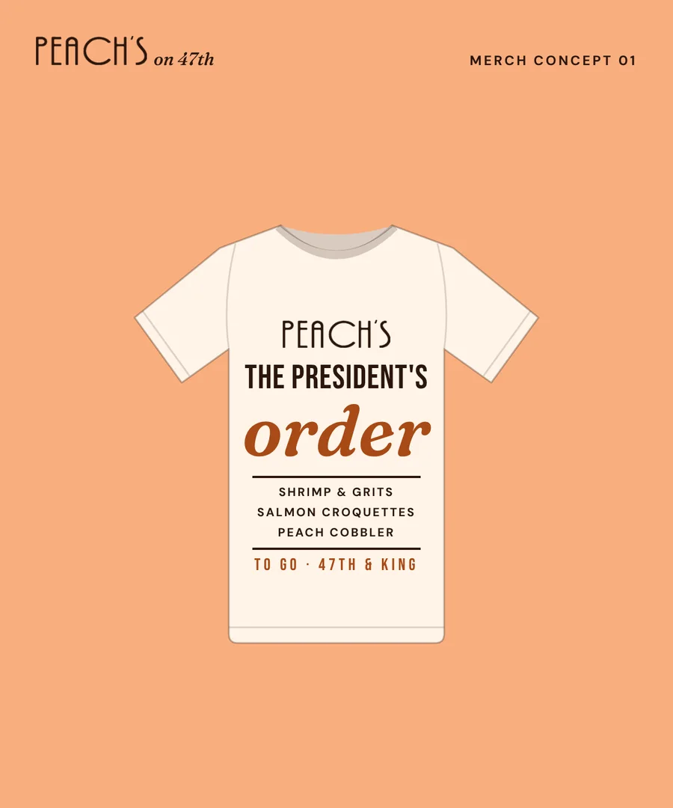
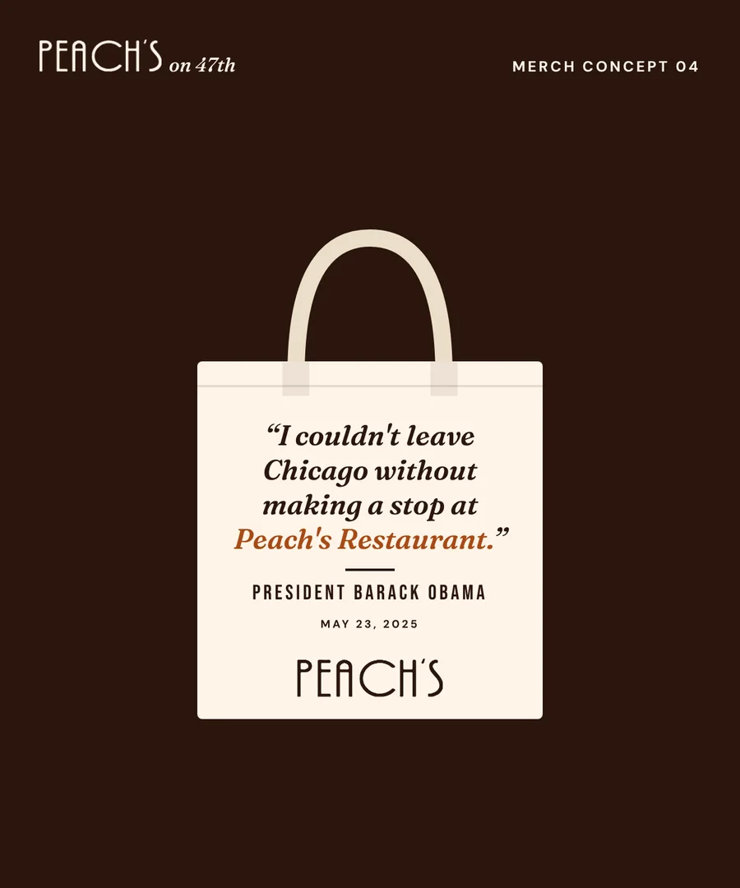
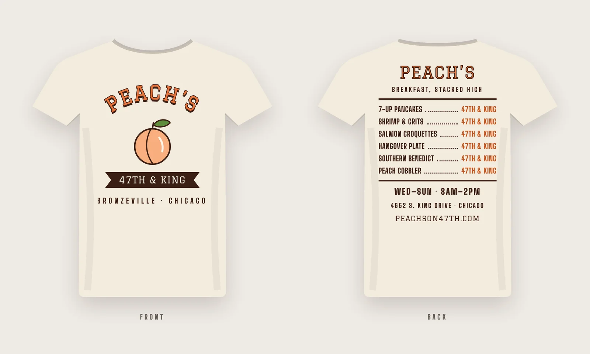
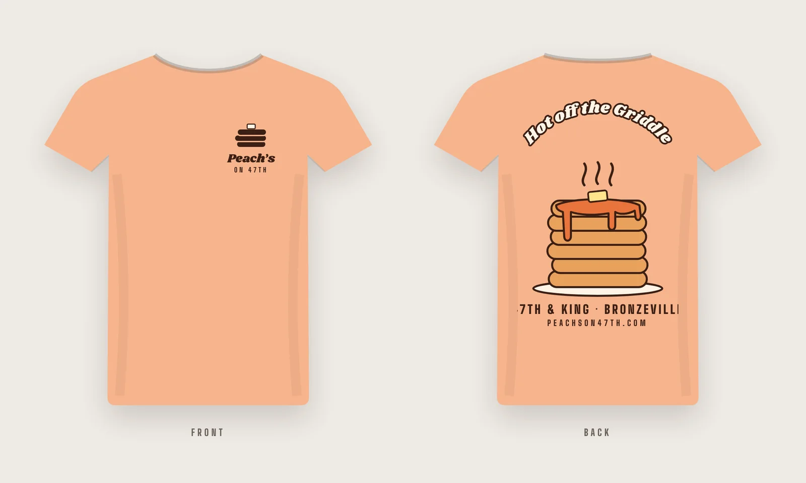
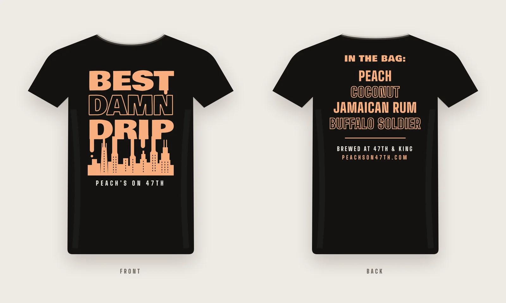
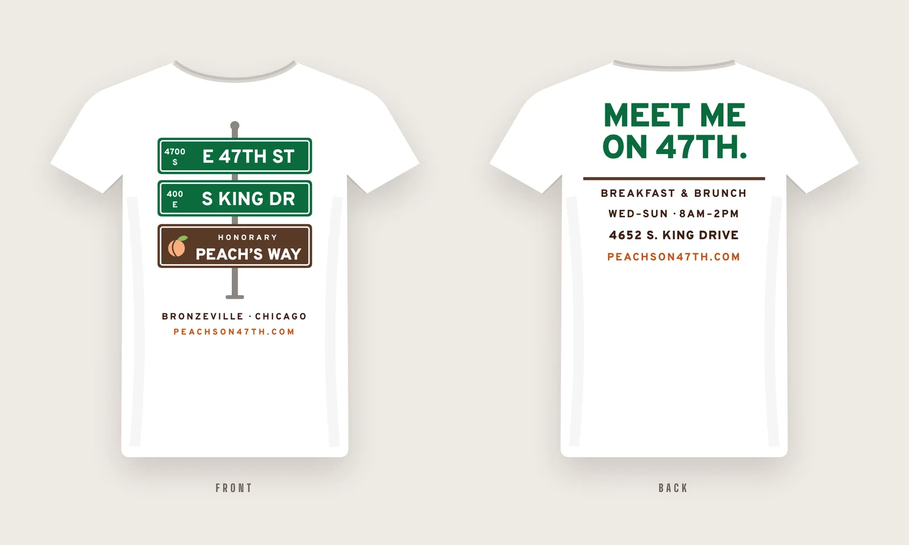

Merch ideas · 10 designs
Peach’s on 47th, to take home
A six-piece starter line and four tee concepts, all built from the restaurant’s own wordmark, mascot, menu and corner. Prices are still to be set.
The merch line
Six pieces to start

01 · Tee
The President’s Order Tee
Front chest print listing the three dishes from the famous to-go order.

02 · Crewneck
Stacked High Crewneck
The website headline as a chest print, with the pancake stack on top.

03 · Cap
The Peach Dad Cap
The girl with the braids, stitched on the front panel. Espresso brim.

04 · Tote
The Stop Tote
The line from the in-store loop, set over the wordmark.
Prints President Obama’s name and words, so it needs written permission from his office before it’s sold.

05 · Mug
Best Damn Drip Mug
Pairs with the coffee bags already sold in the restaurant.

06 · Pantry
Take-Home Pantry
Grits mix, bottled Hangover Sauce and boxed peach cobbler, all straight off the menu.
Tee concepts · front and back
Four more shirts

Tee 1
47th & King Varsity
Varsity lettering over a peach on the front. The back lists the signature plates like a roster, with hours and the address.

Tee 2
Hot Off the Griddle
A small pancake-stack logo on the chest, and a big steaming stack with peach syrup on the back.

Tee 3
Best Damn Drip
The coffee’s name dripping into the Chicago skyline, with the coffee flavors listed on the back.

Tee 4
Honorary Peach’s Way
Chicago street signs for 47th and King with a brown honorary “Peach’s Way” sign, and “Meet me on 47th” on the back.